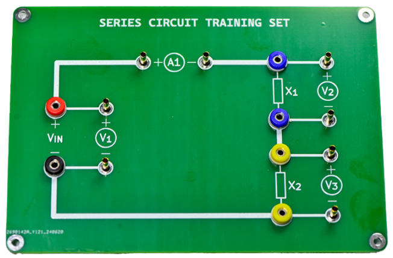
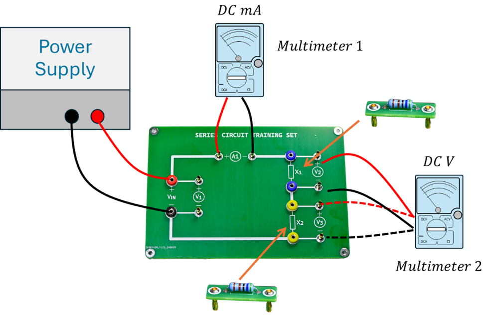

SERIES CIRCUIT TRAINING SET
ชุดฝึกทดลองวงจรอนุกรมที่จะเปลี่ยนการเรียนรู้ไฟฟ้าของคุณให้เป็นเรื่องสนุกและเข้าใจง่าย!

ทำไมต้องเลือก SERIES CIRCUIT TRAINING SET?
- เรียนรู้ด้วยการลงมือทำ: สัมผัสประสบการณ์จริงในการสร้างและทดสอบวงจรอนุกรม เรียนรู้หลักการพื้นฐานของไฟฟ้าได้อย่างลึกซึ้ง
- ออกแบบมาเพื่อความเข้าใจง่าย: แผงวงจรสีสันสดใส เข้าใจส่วนประกอบต่างๆ ได้ง่าย มีจุดเชื่อมต่อที่ชัดเจน เหมาะสำหรับผู้เริ่มต้น
- ครบครันในชุดเดียว: มาพร้อมอุปกรณ์ที่จำเป็นสำหรับการทดลองวงจรอนุกรม ไม่ต้องเสียเวลาหาอุปกรณ์เพิ่มเติม
- เสริมสร้างทักษะการคิดวิเคราะห์: ฝึกฝนการวิเคราะห์วงจร การวัดค่าแรงดันและกระแสไฟฟ้า พัฒนาทักษะการแก้ปัญหา
- เหมาะสำหรับทุกระดับการเรียนรู้: ไม่ว่าคุณจะเป็นนักเรียน นักศึกษา หรือผู้ที่สนใจในไฟฟ้า ก็สามารถใช้ชุดฝึกทดลองนี้เพื่อพัฒนาความรู้และทักษะได้
SERIES CIRCUIT TRAINING SET ประกอบด้วย:
- แผงวงจรพร้อมจุดเชื่อมต่อและสัญลักษณ์ที่ชัดเจน
- ตัวต้านทาน (Resistors)
- จุดวัดแรงดัน (Voltage measurement points)
- จุดวัดกระแส (Current measurement point)
- และอื่นๆ อีกมากมาย!
ด้วย SERIES CIRCUIT TRAINING SET คุณจะสามารถ:
- สร้างและทดสอบวงจรอนุกรมได้อย่างง่ายดาย
- วัดค่าแรงดันและกระแสไฟฟ้าในจุดต่างๆ ของวงจร
- เรียนรู้ความสัมพันธ์ระหว่างแรงดัน กระแส และความต้านทาน
- เข้าใจหลักการแบ่งแรงดันในวงจรอนุกรม
- และอื่นๆ อีกมากมาย!
ตัวอย่างการใช้งาน:

อย่าปล่อยให้การเรียนรู้ไฟฟ้าเป็นเรื่องน่าเบื่ออีกต่อไป!